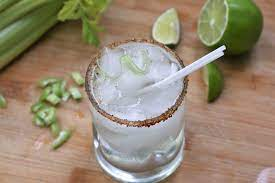

Celerita's Recipe

Ingredients
- 4 tablespoons chopped celery
- 1 teaspoon white sugar
- 3 ounces tequila
- 1 (12 fluid ounce) can lime-flavored seltzer water
Steps
- Muddle celery and sugar together in a mixing glass until crushed. Add tequila and stir to dissolve sugar. Strain into 2 ice-filled Collins or rocks glasses. Top with seltzer.